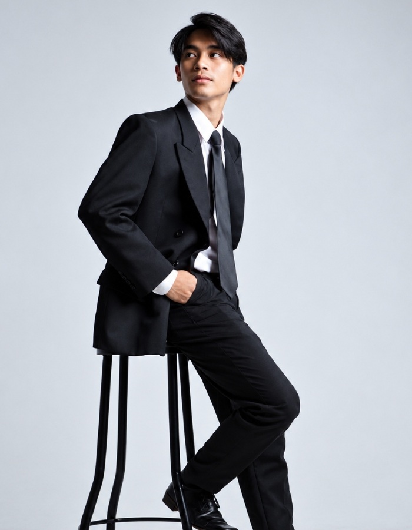
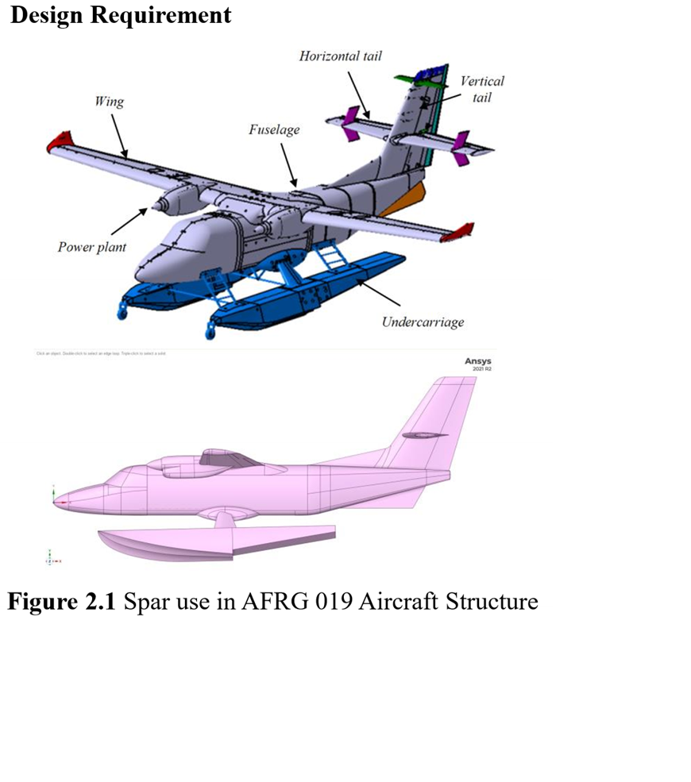

Syofyan Alrisandi, S.T.
Lulusan Sarjana Teknik Mesin Universitas Andalas (2024) dengan keahlian mendalam pada prinsip rekayasa mekanika, perancangan sistem, dan optimasi struktur. Berpengalaman dalam pemodelan 3D CAD Autodesk Inventor & SolidWorks, simulasi elemen hingga (FEA) MSC Nastran/Patran, uji dinamika fluida terowongan angin ILST di Badan Riset dan Inovasi Nasional (BRIN), serta pengembangan purwarupa kendaraan otonom.

Laboratorium Interaktif & Simulasi Rekayasa
Eksplorasi pembuktian teknis: slider komparasi multi-state CAD ke FEA dan Purwarupa Nyata, kalkulator simulasi aerodinamika & getaran real-time, serta komponen mekanik 3D interaktif WebGL.
Kalkulator Tekanan Dinamis & Safety Factor Sayap N219
Simulasikan pembebanan aerodinamika terowongan angin subsonik ILST (kecepatan hingga 120 m/s) dan periksa faktor keamanan struktur sayap.
Estimator Frekuensi Pribadi Sayap UAV (SOL 103)
Perkirakan frekuensi natural dan hindari flutter getaran fluida dengan memvariasikan letak spar terhadap Center of Gravity (CG).
Tentang Syofyan Alrisandi
Kombinasi kuat antara landasan teori rekayasa mekanika, keahlian komputasi simulasi (CAE/FEA), dan kemampuan manufaktur prototipe lapangan.
Dedikasi pada Presisi & Optimasi Rekayasa
Saya memiliki pemahaman mendalam tentang prinsip-prinsip teknik mesin, khususnya di bidang desain mekanikal dan rekayasa optimasi struktur. Pengalaman saya terentang mulai dari pemodelan CAD parametrik, analisis getaran respon frekuensi (FRF), perhitungan faktor keamanan aerodinamika pesawat di terowongan angin BRIN, hingga desain mekanikal mesin agro-industri dan kapal otonom.
Sebagai mantan Asisten Laboratorium Dinamika Struktur Departemen Teknik Mesin Universitas Andalas, saya membimbing 153 mahasiswa dalam mekanika kekuatan material, dinamika partikel, getaran mekanis, dan statika struktur, berhasil meningkatkan tingkat kelulusan dan keberhasilan tugas sebesar 45% melalui metode penyelesaian masalah teknis yang sistematis.
Universitas Andalas (UNAND)
S1 Teknik Mesin • Lulus 2024 (IPK 3.61 / 4.00)
- Prof. Dr. Eng, Lovely Son - Guru Besar Teknik Mesin UNAND (+6281213552846)
- Prof. Dr. -Ing, Mulyadi Bur - Guru Besar Teknik Mesin UNAND (+62811661183)
Pilar Rekayasa & Keahlian Perangkat Lunak
Penguasaan perangkat lunak komersial CAD/CAE standar industri dan metode pengujian eksperimental.
CAD & 3D Modeling
Desain parametrik 3D part & assembly kompleks, gambar kerja 2D proyeksi ortogonal standar ISO, dan toleransi geometri.
FEA & Simulasi Getaran
Analisis elemen hingga untuk tegangan, deformasi, frekuensi pribadi, respon getaran struktur, dan optimasi berat.
Aero & Uji Terowongan Angin
Pengujian aerodinamika fluida terowongan angin subsonik di ILST BRIN dan uji modal analisis getaran struktur.
Fabrikasi & Otonom
Manufaktur komposit serat, permesinan bubut/frais, pengelasan, dan integrasi avionik otonom berbasis Pixhawk & IoT.
Proyek Rekayasa & Hasil Penelitian
Eksplorasi karya rancang bangun mekanika, simulasi aeroelastisitas, pengujian struktur di BRIN, dan purwarupa sistem otonom.

Pengalaman Kerja & Organisasi
Pengalaman riset di lembaga penelitian nasional BRIN, asisten laboratorium universitas, serta kepemimpinan divisi desain wahana otonom.
Intern in Aerodynamics, Aeroelastics, and Aeroacoustics Laboratory (LA3)
Berpartisipasi aktif dalam riset dan pengembangan (R&D) wahana tanpa awak (UAV) dan pesawat nasional di fasilitas uji terowongan angin subsonik nasional (Indonesian Low Speed Tunnel - ILST).
- Melakukan analisis konstruksi UAV dengan aplikasi FEA dan analisis karakteristik fluida aerodinamika di terowongan angin ILST.
- Menganalisis kekuatan konstruksi pesawat amfibi 2-mesin 19-penumpang N219 Amphibious untuk komponen sayap, konektor lambung (floaters), dan badan pesawat dengan tingkat faktor keamanan (safety factor) di atas 2.0 sehingga prototipe 100% aman selama kampanye pengujian.
- Terlibat langsung dalam pelaksanaan uji coba aerodinamika model pesawat amfibi N219 di terowongan angin ILST.
Asisten Laboratorium Dinamika Struktur (LDS)
Bertanggung jawab penuh atas operasional peralatan uji laboratorium dinamika struktur serta membimbing mahasiswa sarjana dalam pemahaman konsep analitis mekanika.
- Memberikan asistensi teknis kepada 153 mahasiswa dalam tugas akademik mekanika kekuatan material, dinamika partikel, getaran mekanis, dan statika struktur.
- Menyusun solusi soal dan pendampingan problem solving yang meningkatkan tingkat kelulusan dan nilai ujian mahasiswa sebesar 45%.
- Bertanggung jawab 100% dalam pengoperasian dan pemeliharaan alat-alat laboratorium untuk pengujian Tugas Akhir.
Koordinator Desain & Desainer Sayap Racing Plane
Memimpin divisi rancang bangun pesawat UAV untuk kompetisi nasional Kontes Robot Terbang Indonesia (KRTI Puspresnas).
- Mengkoordinasikan 6 anggota desainer mencapai tingkat keberhasilan riset 90% pada 6 divisi misi UAV (Racing Plane, Fixed Wing Mapping, VTOL, Propeller, Airframe, dan Prime Mover).
- Merancang wahana Racing Plane berkecepatan 150 km/jam berfokus pada aerodinamika dan stabilitas tinggi.
- Merancang peluncur pesawat (spring aircraft launcher) mekanis dengan tingkat keberhasilan 90%.
- Mengontrol kualitas implementasi desain hingga toleransi presisi mencapai 95%.
Divisi Desain & Produksi Kapal Otonom ATSV
Mengembangkan purwarupa Autonomous Tourism Surface Vessel (ATSV) untuk Kontes Kapal Cepat Tak Berawak Nasional (KKCTBN) di Universitas Indonesia.
- Merancang lambung ganda Catamaran komposit fiberglass yang efisien dan stabil bermanuver.
- Memproduksi dan melakukan quality control prototipe dengan akurasi integrasi sistem otonom mencapai 95%.
- Melakukan simulasi hidrodinamika resistensi gelombang dan pengujian manuver lapangan dengan draft sarat air hanya 6 cm.
Staf Divisi Riset dan Acara
- Tim penyusun 60 soal Olimpiade Matematika dan solusi pada Mechanical Creativity Competition 2021.
- Juri Lomba Roket Air Mechanical Creativity Competition 2023 dengan 42 peserta.
- Berkontribusi aktif dalam pengembangan unit kegiatan mahasiswa bidang Aero-Hydro Modeling.
Prestasi & Juara Kompetisi Rekayasa
Rekam jejak kejuaraan dan pengakuan kompetisi desain alat, robotika terbang, kapal cepat, dan karya inovasi tingkat nasional & internasional.
Lomba Desain Alat Nasional
Tema: "Sustainable Wastewater Technology" • Jurusan Teknik Lingkungan UNAND
Kontes Kapal Cepat Tak Berawak Nasional (KKCTBN)
Divisi ATSV Prototype Manufacturing & Performance • Puspresnas di Universitas Indonesia
Program Kreativitas Mahasiswa Karya Inovatif (PKM-KI)
Tim Hybrid Smart E-Ovitrap • Didanai Kemendikbudristek di PIMNAS 2023
National Energy Seminar Poster Competition
Serikat Pekerja Pertamina Unit Pemasaran III (SPP UPms III)
Lomba Desain Alat Nasional
Tema: "Gen-Z Innovation: Clear Air Tech" • Teknik Lingkungan UNAND
Kontes Robot Terbang Indonesia (KRTI)
Divisi Racing Plane • Pusat Prestasi Nasional (Puspresnas)
Design Competition HMM FT-UNAND
Himpunan Mahasiswa Mesin Fakultas Teknik Universitas Andalas
Hands-free Sanitizer Competition
Himpunan Mahasiswa Mesin FT-UNAND
Hands-free Sanitizer Mechanism Design Challenge
Institution of Engineers Malaysia (IEM)
Penampil Dokumen PDF Interaktif (12 Halaman)
Jelajahi seluruh lembar dokumen asli CV & Portofolio lengkap dengan resolusi tinggi, atau unduh langsung file PDF resminya.
Mulai Kolaborasi & Rekrutmen
Siap untuk berdiskusi seputar peluang kerja di bidang Teknik Mesin, FEA / Simulasi Struktur, Aerodinamika, atau Desain Rancang Bangun.
Kontak Langsung
Kirim Pesan Langsung
Formulir ini akan langsung terhubung ke percakapan WhatsApp resmi saya.